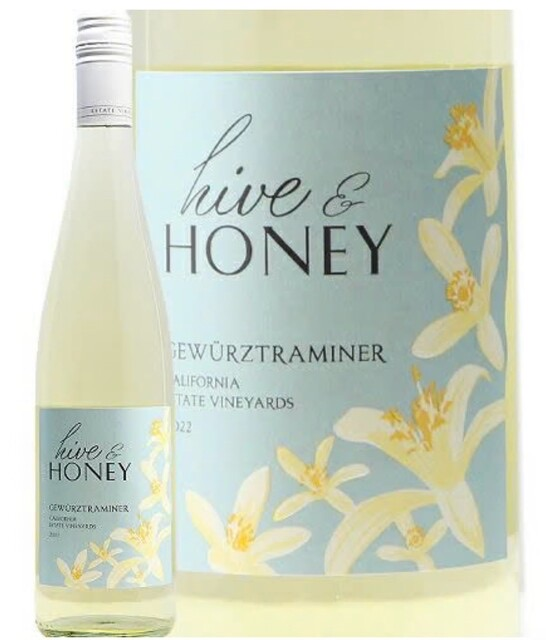
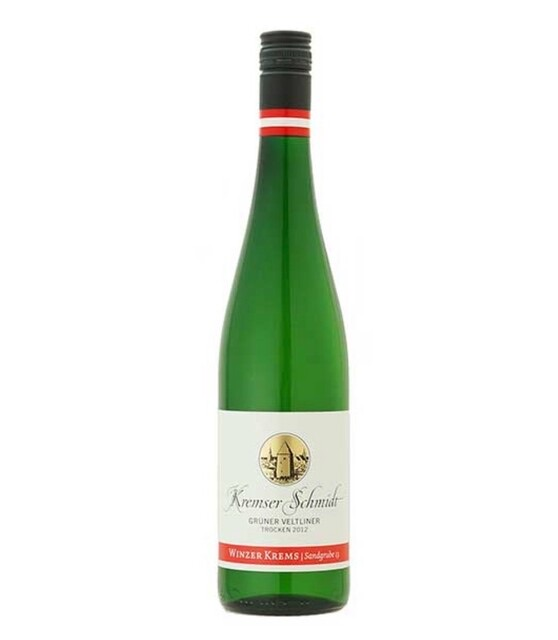
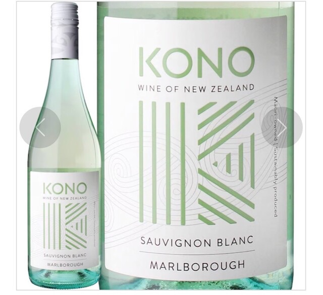
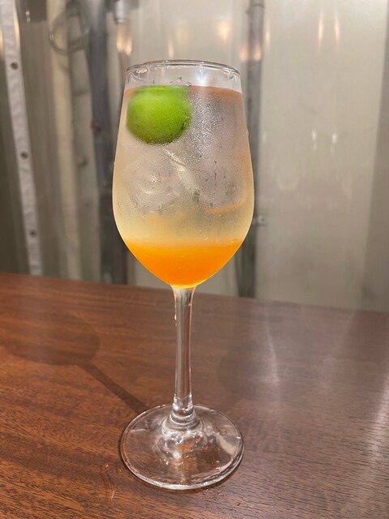
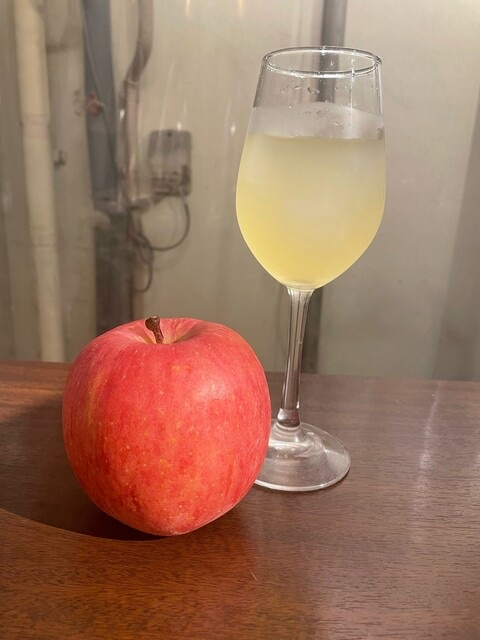
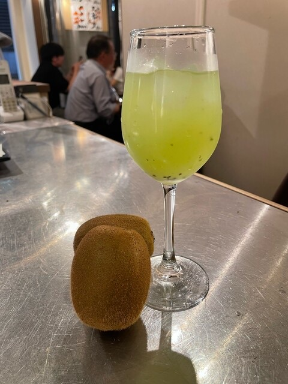

焼いたバケットに自家製牛すじを乗せ仕上げにパルミジャーノをかけた至極の逸品です

＊国:フランス(ラングドック)
＊品種:ソーヴィニョンブラン
＊タイプ:白辛口、自然派
＊特徴:レモンやライムの柑橘の爽やかさにミントの爽快感をプラス。フレッシュな酸とふくよかながらもすっきりとした飲み口
＊国:日本(山梨.甲斐ワイナリー)
＊品種:甲州
＊タイプ:白辛口
＊特徴:柑橘と青リンゴの香り漂うキレのある辛口白
＊国:ドイツ(ファルツ)
＊品種:リースリング100%
＊タイプ:白辛口
＊特徴: ピュアですっきり爽やかな辛口。青リンゴや白桃、スターフルーツ、レモンの香り
![シャルドネ[米] ボトル](menu-img/3a4b0c40bc622d47e7439c4febb1c335.jpg)
＊国:アメリカ(カリフォルニア)
＊品種:シャルドネ100%
＊タイプ:白辛口
＊特徴:青リンゴと洋ナシの香り、果実の風味にトースティーなベーキング・スパイスとバニラのニュアンス

国:アメリカ(カリフォルニア)
品種:ゲヴェルツトラミネール
タイプ:白辛口
特徴:一口飲むとライチの香りが広がる、ライトボディでキリッとした酸味があり、絶妙なバランス

＊国:オーストリア
＊品種:グリューナーヴェルトリーナー
＊タイプ:白辛口
＊特徴:爽やかなハーブ、白胡椒の香り、柑橘系フルーツのフレッシュな果実味、ミネラリーな辛口で飽きのこない味わいは食事にぴったり!!塩で食べるテンプラにお奨め

＊国:ニュージーランド
＊品種:ソーヴィニョン・ブラン
＊タイプ:白辛口
＊特徴:フレッシュなミント、ライム、グレープフルーツといった爽やかな果実香が十分に現れ、トロピカルフルーツのニュアンス
![オレンジワイン[伊] グラス](menu-img/8b07b241556d47f030de3c990acb6158.jpg)
＊国:イタリア
＊品種:ピノ・グリージョ
＊タイプ:オレンジ辛口
＊特徴:淡いピンクの外観に、りんごキャンディやハーブ、桜餅の甘やかな香りが広がる

New summer orange Sangría






Oolong Tea
Craft Cola
ginger ale
New summer orange Soda
SODA
Non Alcohol Lemon Sour
Peach Soda
Grape vinegar soda
Orange Soda
Calpico Water
Apple Soda
Calpico Soda
Jasmine tea
Green Tea